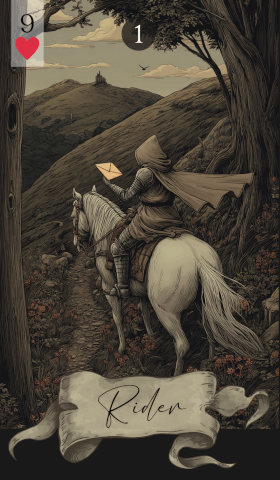

第 1 张 · 红桃 9
骑士
消息
讯息
到来
迅速
年轻男子
消息正在路上。骑士带来讯息、迅捷的行动，以及「有东西正在抵达」的气息——某件事正朝你而来， 比你以为的更快。
免费抽牌 →
骑士是雷诺曼牌组的第一张，也是最直接关联「移动」与「沟通」的一张。 它出现时，往往意味着有消息、有讯息，或有什么东西很快就要到了—— 一通电话、一封邮件、一次登门，或是你一直在等的那个说法。 它极少指向缓慢或沉重的事，气息是轻的、快的、当下的。
除了消息，骑士也代表年轻男性、少年气，以及身体层面的移动： 运动的人、送货、开车或坐飞机的行程。在解读中，这张牌几乎不单独成立—— 它的含义几乎完全由旁边那张牌决定。骑士只告诉你「有东西在路上」， 至于是什么，要看它身边的牌。
在感情里，骑士常常意味着新的接触：第一条消息、一次久等的回复、一句约见面的邀请。 对于有伴侣的人，它可以标记一段快速的进展——伴侣那边传来的消息、一个正在赶来的浪漫举动， 或是沉寂一阵后重新开始的流动。对单身的人，它多半是一位年轻的追求者， 或是一场比预期来得更早的偶遇。无论指向哪一边，那股能量都是轻盈而即刻的。
在工作上，骑士指向即将进来的沟通：一份录用通知、一封回信、一件悬而未决之事的最新进展。 它也可以表示节奏很快的项目、新客户上门，或是消息在团队内部传开。 这张牌同样代表更年轻的同事、配送，以及与交通运输相关的工作。 如果你正在等一份工作、一纸合同或一个决定的答复，骑士说：它在路上了。
留意你收到的讯息，对到来的一切保持开放。骑士劝人快一点—— 接起那通电话，回掉那封邮件，趁机会还在就去赴那场会面。 它也提示你可能需要由你来传达消息，而且不要拖。 重要的沟通，别压在手里。
雷诺曼的牌很少单独说话——骑士尤其会追问一句「关于什么的消息？」， 而答案永远来自它旁边那张牌。以下按牌序，列出骑士与其余 35 张牌的读法：
传统图像是一位年轻骑手，纵马疾驰过开阔的原野—— 这是反复出现在欧洲民间图像里的信使形象。他带来的是下一张牌所描述的内容。 马是那台引擎：速度、活力、动起来的身体。 现代读者常用今天的对应物替换它——手机弹出的提示、上门的快递、停在门口的车。 不变的那一部分，是「抵达」。